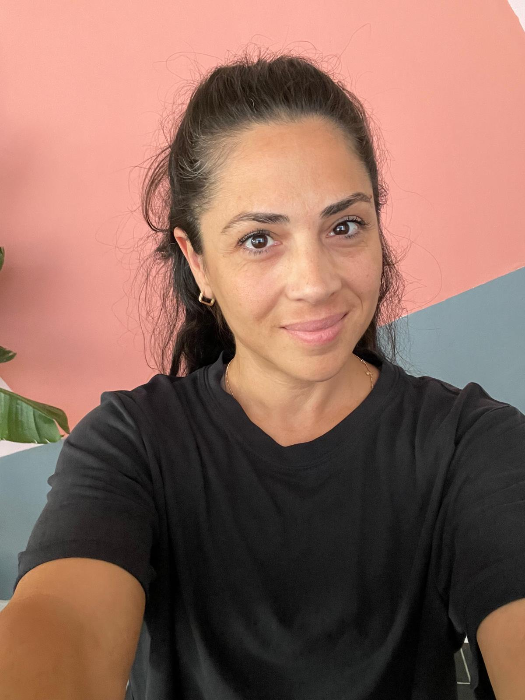

TCF 2. Kademe Pilates Eğitmeni · 3. Kademe Yüzme Antrenörü
Mihriban Doğaroğlu
Eğitim ve spor geçmişi
1985 yılında İzmir Karşıyaka’da doğdum. Sporla olan bağım erken yaşlarda başladı ve zaman içinde eğitimim ile mesleki deneyimlerim doğrultusunda profesyonel bir alana dönüştü.
2008 yılında Muğla Sıtkı Koçman Üniversitesi Spor Bilimleri Fakültesi Antrenörlük Eğitimi Bölümü’nden mezun oldum. Hemen ardından, Pilates egzersizleri üzerine akademik çalışmalar yürüttüğüm Sağlık Bilimleri Enstitüsü Beden Eğitimi ve Spor Anabilim Dalı’nda yüksek lisans programını tamamladım.
Mesleki deneyim ve Pilates yaklaşımı
Antrenörlük hayatım boyunca Akyaka ve Muğla’daki işletmelerimde farklı yaş ve seviyelerdeki sporcular ve üyelerle çalıştım. Hareket, performans, beden farkındalığı ve doğru egzersiz yaklaşımı konusunda kapsamlı deneyim edindim.
Spor bilimleri ve antrenörlük alanındaki bilgi ve deneyimimi Pilates yaklaşımıyla birleştiriyorum. Pilates’i; hareket kalitesini, beden farkındalığını, kuvveti ve dengeyi geliştiren bütünsel bir çalışma sistemi olarak ele alıyorum.
Her bireyin fiziksel özelliklerinin, geçmişinin ve ihtiyaçlarının farklı olduğuna inanıyor; egzersizin kişinin hedeflerine ve kapasitesine göre planlanması gerektiğini düşünüyorum.
THERA
2022 yılında ortağım Damla Koca ile birlikte THERA Pilates Stüdyosu’nu kurduk. Kuruluşumuzdan bu yana THERA’da aktif olarak çalışıyorum.
THERA’yı oluştururken hedefimiz; spor bilimleri, fizyoterapi ve Pilates disiplinlerinin güçlü yönlerini bir araya getirerek kişilerin kendilerini daha iyi tanıdığı, doğru hareket etmeyi öğrendiği ve egzersizi yaşamlarının sürdürülebilir bir parçası hâline getirdiği bir alan yaratmaktı. Katıldığımız eğitim ve seminerlerle kendimizi geliştirmeye, bizi tercih eden üyelerimize fayda sağlamaya devam ediyoruz. İşimizi çok seviyoruz.